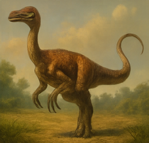

Gallimimus

Personality Traits
- Fleet-footed socialite—your speed lights up the herd.
- Playful spirit—loves games and group energy.
- Opportunistic forager—nothing slips past your eyes.
Romance Compatibility
- Velociraptor: Thrilling chases spark your bond.
- Parasaurolophus: Your laughter matches their melody.
- Spinosaurus: Shared zest for adventure unites you.
Yearly Omikuji Fortune
- Overall Luck
- 吉 (Good Luck): This year you're 80% wind, 20% curiosity. Good things come to you quickly—and occasionally trip over your feet because you were already moving on.
- Love
- You’ll sprint past someone who turns to watch you go, then speed up to catch your attention. You flirt via footrace. They understand. They also trip. You help them up. Destiny sneaks in.
- The Person You're Waiting For
- A multi-tasking free spirit with a messy nest and contagious laughter finally catches up. You bond over shared confusion and favorite bugs. It's weird. It's real.
- Lost Item
- Your best toe ring (made from fossilized snail shell) is found inside your snack pouch, nestled between a feather and something crunchy. You feel both relieved and mildly disturbed.
- Studies and Learning
- You enroll in six courses, forget four, and accidentally teach one. Your enthusiasm wins over a skeptical crowd. Someone builds you a library shelf out of bones. You feel loved and vaguely academic.
- Work and Projects
- You’re promoted to “Morale Manager” after showing up to every team meeting with dance moves and motivational chirps. Your paycheck is a pile of shiny pebbles. It’s fine.
- Taking a Trip
- A spontaneous dash across flatlands leads to unexpected friendship, a muddy treasure, and one accidental modeling contract for a moss-themed calendar.
- Wish
- You wish for excitement—and receive it in hourly doses, sometimes followed by snacks. A side quest involving fruit, glitter, and minor fame will define your late season arc.
- Health
- Your legs remain elite. Your stomach may revolt if you eat mystery berries again. Avoid challenge snacks unless dared publicly—then it's fate.